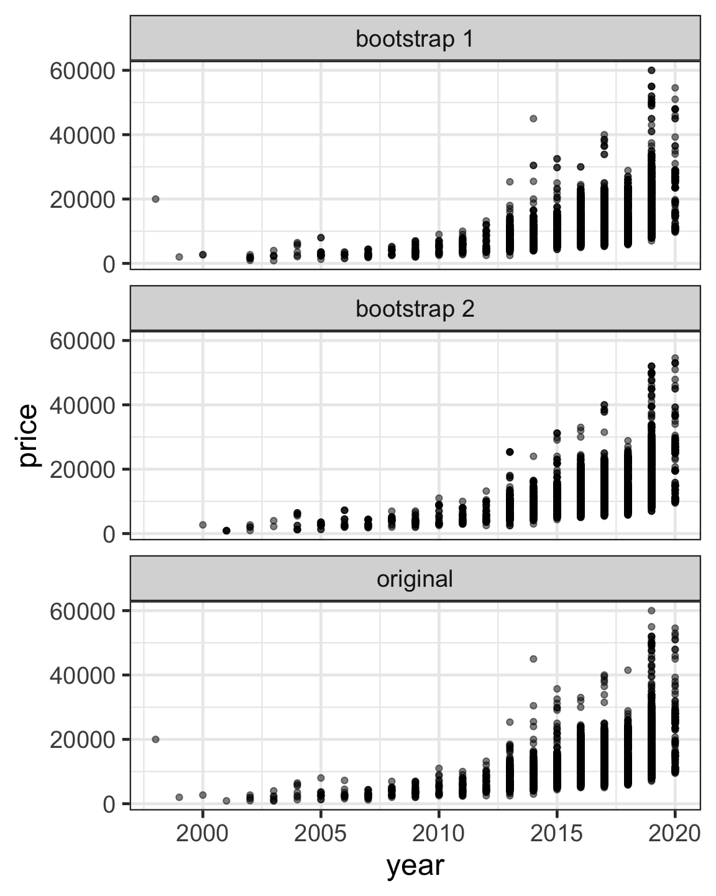

ETC3250/5250
Introduction to Machine Learning
Resampling
Lecturer: Emi Tanaka
Department of Econometrics and Business Statistics
Resampling
- Resampling is a process of making new data based on observed data.
- Commonly used resampling methods include:
- Cross validation
- often used for model assessment.
- Bootstrapping
- often used to provide a measure of accuracy of a parameter estimate.
- Cross validation
Recall: training, validation and testing data sets
- In Lecture 1, randomly splitting 75% of data into training data and the remaining 25% into testing data, then measured the accuracy of model trained on the training data using the testing data.
- But the model accuracy changes on a different split.
- Cross-validation extends this approach to:
- several iterations of different splits, and
- combine (typically by averaging) the model accuracy across the iterations.
Cross validation
\(k\)-fold cross validation

- Partition samples into \(k\) (near) equal sized subsamples (referred to as folds).
- Fit the model on \(k − 1\) subsets, and compute a metric, e.g. RMSE, on the omitted subset.
- Repeat \(k\) times omitting a different subset each time.
Cross validation accuracy
- Choice of \(k = 10\) is common.
- Recall from Lecture 1 there are a number of ways to measure preditive accuracy, e.g. RMSE, MAE, MAPE and MPE.
- Cross-validation accuracy is calculated:
- by calculating the accuracy (based on one metric) on every fold, then
- combining this into a single number, e.g. by taking a simple average.
\(k\)-fold cross validation with rsample
- \(k = 5\) fold cross validation (\(k =\)
vin thersamplepackage)
# 5-fold cross-validation
# A tibble: 5 × 2
splits id
<list> <chr>
1 <split [5390/1348]> Fold1
2 <split [5390/1348]> Fold2
3 <split [5390/1348]> Fold3
4 <split [5391/1347]> Fold4
5 <split [5391/1347]> Fold5Measuring accuracy for a single fold
scroll
- Each fold is an
rsplitobject:
- So you can extract the training and testing data as before:
- And train models as before:
- Then predict responses:
- and finally measure predictive accuracy for this fold:
library(yardstick)
results_test1 %>%
group_by(.model) %>%
metric_set(rmse, mae, mape, mpe, rsq)(., price, .pred) %>%
pivot_wider(.model, names_from = .metric, values_from = .estimate)# A tibble: 3 × 6
.model rmse mae mape mpe rsq
<chr> <dbl> <dbl> <dbl> <dbl> <dbl>
1 knn 7808. 6631. 70.4 -64.7 0.188
2 reg 5364. 4123. 33.7 -8.23 0.186
3 tree 5380. 4121. 33.8 -8.67 0.178Fitting the models for each fold
toyota_models <- toyota_folds %>%
# fit models
mutate(reg = map(splits, ~lm(log10(price) ~ year, data = training(.x))),
tree = map(splits, ~rpart(log10(price) ~ year, data = training(.x), method = "anova")),
knn = map(splits, ~train.kknn(log10(price) ~ year, data = training(.x))))
toyota_models# 5-fold cross-validation
# A tibble: 5 × 5
splits id reg tree knn
<list> <chr> <list> <list> <list>
1 <split [5390/1348]> Fold1 <lm> <rpart> <trn.kknn>
2 <split [5390/1348]> Fold2 <lm> <rpart> <trn.kknn>
3 <split [5390/1348]> Fold3 <lm> <rpart> <trn.kknn>
4 <split [5391/1347]> Fold4 <lm> <rpart> <trn.kknn>
5 <split [5391/1347]> Fold5 <lm> <rpart> <trn.kknn>Measuring accuracy for each fold
scroll
toyota_metrics <- toyota_models %>%
mutate(across(c(reg, tree, knn), function(models) {
# now for every fold and model,
map2(splits, models, function(.split, .model) {
testing(.split) %>%
# compute prediction for testing set
mutate(.pred = 10^predict(.model, .)) %>%
# then get metrics
metric_set(rmse, mae, mape, mpe, rsq)(., price, .pred) %>%
# in a one-row data frame such that
# column names are metric,
# values are the accuracy measure
pivot_wider(-.estimator,
names_from = .metric,
values_from = .estimate)
})
}, .names = "{.col}_metrics"))
toyota_metrics# 5-fold cross-validation
# A tibble: 5 × 8
splits id reg tree knn reg_metrics
<list> <chr> <list> <list> <list> <list>
1 <split [5390/1348]> Fold1 <lm> <rpart> <trn.kknn> <tibble [1 × 5]>
2 <split [5390/1348]> Fold2 <lm> <rpart> <trn.kknn> <tibble [1 × 5]>
3 <split [5390/1348]> Fold3 <lm> <rpart> <trn.kknn> <tibble [1 × 5]>
4 <split [5391/1347]> Fold4 <lm> <rpart> <trn.kknn> <tibble [1 × 5]>
5 <split [5391/1347]> Fold5 <lm> <rpart> <trn.kknn> <tibble [1 × 5]>
tree_metrics knn_metrics
<list> <list>
1 <tibble [1 × 5]> <tibble [1 × 5]>
2 <tibble [1 × 5]> <tibble [1 × 5]>
3 <tibble [1 × 5]> <tibble [1 × 5]>
4 <tibble [1 × 5]> <tibble [1 × 5]>
5 <tibble [1 × 5]> <tibble [1 × 5]># A tibble: 1 × 5
rmse mae mape mpe rsq
<dbl> <dbl> <dbl> <dbl> <dbl>
1 5364. 4123. 33.7 -8.23 0.186Examining the fold results
toyota_metrics_wide <- toyota_metrics %>%
# expand to see results
unnest_wider(ends_with("_metrics"), names_sep = "_") %>%
# wrangle data into output form below
pivot_longer(contains("metrics"),
names_to = c("model", "metric"),
names_pattern = "(.*)_metrics_(.*)",
values_to = "value") %>%
pivot_wider(c(id, model),
names_from = metric,
values_from = value)
toyota_metrics_wide# A tibble: 15 × 7
id model rmse mae mape mpe rsq
<chr> <chr> <dbl> <dbl> <dbl> <dbl> <dbl>
1 Fold1 reg 5364. 4123. 33.7 -8.23 0.186
2 Fold1 tree 5380. 4121. 33.8 -8.67 0.178
3 Fold1 knn 7808. 6631. 70.4 -64.7 0.188
4 Fold2 reg 5633. 4227. 33.6 -6.62 0.193
5 Fold2 tree 5585. 4184. 33.4 -6.45 0.207
6 Fold2 knn 7508. 6285. 65.2 -57.6 0.205
7 Fold3 reg 5845. 4240. 34.5 -7.94 0.245
8 Fold3 tree 5794. 4197. 34.9 -8.42 0.262
9 Fold3 knn 8880. 7337. 78.0 -71.7 0.192
10 Fold4 reg 6010. 4200. 33.3 -7.79 0.184
11 Fold4 tree 5964. 4149. 33.0 -7.93 0.196
12 Fold4 knn 8512. 7092. 73.8 -68.9 0.192
13 Fold5 reg 5984. 4273. 33.3 -6.84 0.195
14 Fold5 tree 5949. 4219. 33.0 -7.00 0.201
15 Fold5 knn 7902. 6602. 68.9 -63.3 0.207Getting the cross validation metrics
toyota_metrics_wide %>%
# get the average of each metric columns
group_by(model) %>%
summarise(across(rmse:rsq, mean)) # A tibble: 3 × 6
model rmse mae mape mpe rsq
<chr> <dbl> <dbl> <dbl> <dbl> <dbl>
1 knn 8122. 6790. 71.3 -65.2 0.197
2 reg 5767. 4212. 33.7 -7.48 0.201
3 tree 5734. 4174. 33.6 -7.69 0.209- But a numerical summary alone can be deceiving in understand what is the best model.
Visualising with parallel coordinate plots
- Parallel coordinate plots can be used to visualise high-dimensional data - here our model metrics!
- Each variable is shown in the \(x\)-axis.
- The value of the variable is standardised in this plot.
- The lines correspond to an observational unit (a fold and a model combination).
- The lines are colored by the model here.
Results
- We see that
knnhas a large variation in the metrics - this means this model has a high variance and it is not desirable. - The
treeandreghas a large variation inrmseandrsq- they are somewhat similar in performance.
Leave-one-out cross validation (LOOCV)
- LOOCV is a special case of \(k\)-fold cross validation where \(k = n\) (or \(n_{Train}\)).
- The
rsamplepackage has a specific function for this special case that is essentially similar to above:
# Leave-one-out cross-validation
# A tibble: 6,738 × 2
splits id
<list> <chr>
1 <split [6737/1]> Resample1
2 <split [6737/1]> Resample2
3 <split [6737/1]> Resample3
4 <split [6737/1]> Resample4
5 <split [6737/1]> Resample5
6 <split [6737/1]> Resample6
7 <split [6737/1]> Resample7
8 <split [6737/1]> Resample8
9 <split [6737/1]> Resample9
10 <split [6737/1]> Resample10
# … with 6,728 more rowsBias-variance tradeoff for cross validation
- \(k\)-fold cross validation with \(k < n\) has a computational advantage over LOOCV (\(k = n\)).
- LOOCV is preferred to \(k\)-fold cross validation in the perspective of bias reduction (almost all data are used to estimate the model).
- \(k\)-fold cross validation is preferred to LOOCV in the perspective of lower variance (the \(n\) fitted models in LOOCV are going to be highly positively correlated).
- We usually select \(k=5\) or \(k=10\) to balance the bias-variance trade-off.
Bootstrap
Bootstrap samples
- A bootstrap sample is created by sampling with replacement the original data with the same dimension as the original data.
# A tibble: 6,738 × 9
model year price trans…¹ mileage fuelT…² tax
<chr> <dbl> <dbl> <chr> <dbl> <chr> <dbl>
1 C-HR 2019 26499 Automa… 1970 Hybrid 140
2 Aygo 2018 7800 Manual 12142 Petrol 145
3 Yaris 2015 6490 Manual 36100 Petrol 30
4 Yaris 2018 10500 Manual 9290 Petrol 145
5 Yaris 2018 9595 Manual 20740 Petrol 145
6 Auris 2016 17490 Automa… 29031 Hybrid 0
7 Yaris 2014 8498 Automa… 57677 Hybrid 0
8 PROA… 2019 28456 Automa… 9119 Diesel 145
9 Yaris 2017 7998 Manual 63978 Petrol 150
10 Auris 2017 15095 Automa… 43405 Hybrid 0
# … with 6,728 more rows, 2 more variables:
# mpg <dbl>, engineSize <dbl>, and abbreviated
# variable names ¹transmission, ²fuelTypeCode

Out-of-bag samples for bootstraps
- In a bootstrap sample, some observations may appear more than once or even some not at all.
- When constructing a bootstrap sample split into training and testing dataset, becareful to ensure that the testing dataset only contains out-of-bag (OOB) samples.
- OOB samples are observations that are not included in the bootstrap sample.
rsample::bootstrapsfunction ensures testing data only contains OOB samples.
# Bootstrap sampling
# A tibble: 10 × 2
splits id
<list> <chr>
1 <split [6738/2481]> Bootstrap01
2 <split [6738/2483]> Bootstrap02
3 <split [6738/2461]> Bootstrap03
4 <split [6738/2545]> Bootstrap04
5 <split [6738/2474]> Bootstrap05
6 <split [6738/2468]> Bootstrap06
7 <split [6738/2521]> Bootstrap07
8 <split [6738/2475]> Bootstrap08
9 <split [6738/2479]> Bootstrap09
10 <split [6738/2495]> Bootstrap10Nested cross validation
Nested cross validation
- In practice, you likely need a validation data to optimise the hyperparameters.
- Nested cross validation (or double resampling) includes two resampling schemes:
outside: the initial resampling produces the split into training and testing data for multiple folds/iterations, theninside: the resampling for the initial training data split into training and validation data for multiple folds/iterations.
Nested cross validation with R
- You can achieve this easily using the
rsample::nested_cv()
# Nested resampling:
# outer: 5-fold cross-validation
# inner: Bootstrap sampling
# A tibble: 5 × 3
splits id inner_resamples
<list> <chr> <list>
1 <split [5390/1348]> Fold1 <boot [10 × 2]>
2 <split [5390/1348]> Fold2 <boot [10 × 2]>
3 <split [5390/1348]> Fold3 <boot [10 × 2]>
4 <split [5391/1347]> Fold4 <boot [10 × 2]>
5 <split [5391/1347]> Fold5 <boot [10 × 2]>Cautionary tale for nested cross validation
- Some combinations of resampling schemes will result in the same observations appearing in both the training and testing/validation set.
rsample::nested_cvgives some warning for bad combination but be cautious of this!
Warning: Using bootstrapping as the outer resample is dangerous since the inner
resample might have the same data point in both the analysis and assessment
set.# Nested resampling:
# outer: Bootstrap sampling
# inner: 5-fold cross-validation
# A tibble: 10 × 3
splits id inner_resamples
<list> <chr> <list>
1 <split [6738/2457]> Bootstrap01 <vfold [5 × 2]>
2 <split [6738/2457]> Bootstrap02 <vfold [5 × 2]>
3 <split [6738/2462]> Bootstrap03 <vfold [5 × 2]>
4 <split [6738/2503]> Bootstrap04 <vfold [5 × 2]>
5 <split [6738/2462]> Bootstrap05 <vfold [5 × 2]>
6 <split [6738/2501]> Bootstrap06 <vfold [5 × 2]>
7 <split [6738/2472]> Bootstrap07 <vfold [5 × 2]>
8 <split [6738/2507]> Bootstrap08 <vfold [5 × 2]>
9 <split [6738/2508]> Bootstrap09 <vfold [5 × 2]>
10 <split [6738/2475]> Bootstrap10 <vfold [5 × 2]>Takeaways
- Resampling involves repeatedly drawing samples from the training data to create new data.
- Resampling can be computationally expensive but it can give:
- a more robust estimate of the prediction error or
- help with model selection or tune hyperparameters.

ETC3250/5250 Week 3